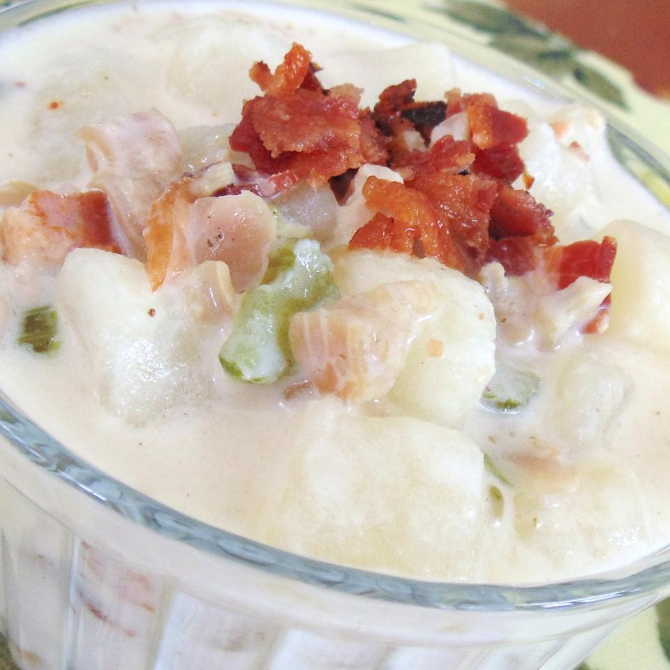

Clam Chowder

Clam Chowder
A delicious California take on the traditional New England clam chowder. We serve this every Christmas Eve.
Ingridients
- 6 slices bacon, or more to taste
- 2 cups diced red potatoes, or more to taste
- 1 cup diced celery
- 1 cup minced yellow onion
- 1 teaspoon salt
- 1/2 teaspoon seafood seasoning
- 1/2 teaspoon garlic salt
- 1/2 teaspoon onion powder
- 1/2 teaspoon thyme
- white pepper to taste
- 1/2 cup butter
- 1/2 cup cornstarch
- 2 cups half-and-half
- 2 cups 2% milk
- 4 (6.5 ounce) cans minced clams, undrained, or more to taste
- 1 1/2 tablespoons re wine vinegar
Steps
- Place bacon in a large skillet and cook over medium-high heat, turning occasionally, until evenly browned, about 10 minutes. Drain bacon slices on paper towels and crumble, reserving the drippings in the skillet.
- Cook and stir potatoes, celery, and onion in the bacon grease over medium heat until cooked through and tender, 10 to 15 minutes. Drain grease from skillet and stir seafood seasoning, garlic salt, onion powder, thyme, and white pepper into vegetable mixture until evenly coated.
- Melt butter in a large, heavy saucepan over medium heat. Whisk cornstarch into melted butter until smooth, 1 to 2 minutes. Stir half-and-half and milk into butter mixture until thickened and smooth, about 5 minutes.
- Drain juice from canned clams and stir juice into milk-butter mixture; add vegetable mixture and stir. Cook and stir soup until heated through but not boiling, about 5 minutes. Stir clams into soup and simmer until heated through, about 5 minutes. Sprinkle bacon and drizzle red wine vinegar over soup before serving.